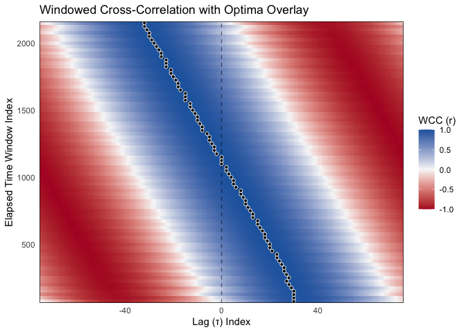

The goal of bsync is to provide a modern, high-efficiency R toolkit for analyzing interpersonal and behavioral synchrony.
While traditional cross-correlation assumes that the association between two time series is stationary over time, in many psychological and behavioral contexts (such as interpersonal conversation or synchronized movement), the lead-lag relationship between individuals is highly dynamic. bsync allows researchers to quantify these nonstationary associations using highly optimized windowed cross-correlation (WCC), windowed dynamic time warping (WDTW), and optima-extraction algorithms.
Furthermore, the package provides a complete analytical pipeline for behavioral time series. This includes robust preprocessing functions for time-bin aggregation, zero-phase signal smoothing, and kinematic velocity/speed calculations, as well as rigorous hypothesis testing via circular-shift surrogate data generation (pseudo-synchrony testing).
Installation
You can install the development version of bsync from GitHub with:
# install.packages("pak")
pak::pak("jmgirard/bsync")Example Workflow
The following example demonstrates a Quick Start WCC pipeline. For a deeper dive into WCC or to learn about Windowed Dynamic Time Warping (WDTW), please see the included package vignettes.
We will use the included sim_dyad dataset, which contains 30 seconds of simulated 3D motion tracking data for two individuals. In this simulation, Person A begins by leading a rhythmic movement, they synchronize in the middle, and Person B takes the lead by the end.
First, we load the package and prepare the data. We highly recommend smoothing positional data before calculating velocities to prevent high-frequency noise from amplifying and skewing the cross-correlations. Here we apply a Savitzky-Golay filter and then calculate the 1D directional velocity on the Z-axis.
library(bsync)
library(dplyr)
data("sim_dyad")
# Step 1: Smooth the raw position data and calculate 1D velocity
df <- sim_dyad |>
mutate(
z_A_smooth = smooth_signal(z_A, method = "sgolay", window = 5),
z_B_smooth = smooth_signal(z_B, method = "sgolay", window = 5),
vel_A = calc_velocity_1d(time, z_A_smooth, fill_edges = TRUE),
vel_B = calc_velocity_1d(time, z_B_smooth, fill_edges = TRUE)
)Next, we calculate the windowed cross-correlations. Calling summary() on the resulting object provides a clean, formatted overview of the analysis settings and the distribution of correlation values.
# Step 2: Calculate Windowed Cross-Correlations
wcc_results <- wcc(
x = df$vel_A,
y = df$vel_B,
window_size = 150,
lag_max = 75,
window_increment = 25,
lag_increment = 1,
na.rm = TRUE
)
# View the summary
summary(wcc_results)
#>
#> ── Windowed Cross-Correlation Analysis ─────────────────────────────────────────
#> Total Windows: 84
#> Total Lags Tested: 151
#> Window Size: 150
#> Max Lag: 75
#> Overall Fisher's Z: 1.0706
#>
#> ── Cross-Correlation Value Distribution ──
#>
#> 0% 25% 50% 75% 100%
#> -0.9984 -0.6821 0.0345 0.7156 0.9986Once the cross-correlations are calculated, we extract the specific lags that represent the optimal association within each time window. Summarizing the optima object displays the extraction metadata alongside an overview of results.
# Step 3: Extract the Optima (Local Maxima)
optima <- pick_optima(
obj = wcc_results,
L_size = 5,
strict_monotonic = FALSE,
search_method = "local"
)
# View the optima results
summary(optima)
#> ── WCC Optima Summary ──────────────────────────────────────────────────────────
#>
#> ── Completeness ──
#>
#> • Total time windows: 84
#> • Valid optima retained: 84 (100%)
#> • Optima dropped (NA): 0 (0%)
#>
#> ── Lag Directionality (Leadership) ──
#>
#> • Positive Lags (x leads y): 41 (48.8%)
#> • Negative Lags (y leads x): 40 (47.6%)
#> • Zero Lags (Simultaneous): 3 (3.6%)
#>
#> ── Optimum Value Distribution ──
#>
#> 0% 25% 50% 75% 100%
#> 0.9742 0.9951 0.9971 0.9976 0.9986Finally, we visualize the resulting correlation landscape. The underlying heatmap represents the cross-correlation values at each lag and elapsed time window. The overlaid points and connecting lines demonstrate the algorithm successfully tracking the shifting lag of optimum association over the course of the interaction.
# Step 4: Plot the correlation landscape and overlay the shifting optima
plot_optima_overlay(
surface_obj = wcc_results,
optima_df = optima
)
Surrogate Testing for Significance
Psychological and behavioral time series are highly autocorrelated, which means random noise can sometimes look like genuine interaction. To verify that our observed synchronization is statistically significant, we can use the wcc_surrogate() function.
This function uses a circular shift method to misalign the two time series, generating a null distribution of “pseudo-synchrony” that preserves the natural autocorrelation of the data but breaks the dyadic interaction.
# Step 5: Run surrogate analysis to calculate an empirical p-value
set.seed(2026)
surrogate_results <- wcc_surrogate(
x = df$vel_A,
y = df$vel_B,
window_size = 150,
lag_max = 75,
window_increment = 25,
lag_increment = 1,
n_surrogates = 100
)
surrogate_results
#> ── WCC Surrogate Analysis (Pseudo-Synchrony) ───────────────────────────────────
#> Permutations: 100
#> Observed Fisher's Z: 1.0706
#> Average Null Z: 0.9894
#> Empirical p-value: < 0.01
#> ✔ Observed synchrony is significantly greater than chance.
#> ℹ Note: 100 permutations may be too few for stable p-values.
#> Consider setting `n_surrogates >= 1000` for final reporting.Citation
If you use bsync in your research, please cite the package:
citation("bsync")
#> To cite package 'bsync' in publications use:
#>
#> Girard JM (2026). _bsync: Behavioral Synchrony Analyses_. R package
#> version 0.0.0.9000, <https://jmgirard.github.io/bsync/>.
#>
#> A BibTeX entry for LaTeX users is
#>
#> @Manual{,
#> title = {bsync: Behavioral Synchrony Analyses},
#> author = {Jeffrey M. Girard},
#> year = {2026},
#> note = {R package version 0.0.0.9000},
#> url = {https://jmgirard.github.io/bsync/},
#> }References
This package builds upon foundational methodology and modern best practices in behavioral time series analysis. We recommend citing the following papers to justify the specific analytical steps used in your pipeline.
Windowed Cross-Correlation & Peak-Picking
The core WCC algorithm and peak-picking logic are based on:
- Boker, S. M., Rotondo, J. L., Xu, M., & King, K. (2002). Windowed cross-correlation and peak picking for the analysis of variability in the association between behavioral time series. Psychological Methods, 7(3), 338.
Dynamic Time Warping
The core DTW alignment algorithm is based on foundational work by:
- Sakoe, H., & Chiba, S. (1978). Dynamic programming algorithm optimization for spoken word recognition. IEEE Transactions on Acoustics, Speech, and Signal Processing, 26(1), 43-49.
Pseudo-Synchrony & Surrogate Testing
The use of circular-shifted surrogate data to establish a statistical baseline for true interpersonal synchrony was popularized in behavioral research by:
- Ramseyer, F., & Tschacher, W. (2011). Nonverbal synchrony in psychotherapy: Coordinated body movement reflects relationship quality and outcome. Journal of Consulting and Clinical Psychology, 79(3), 284-295.
Signal Smoothing & Velocity Calculation
The preprocessing pipeline utilizes zero-phase moving averages and polynomial filtering techniques originally developed by:
- Savitzky, A., & Golay, M. J. (1964). Smoothing and differentiation of data by simplified least squares procedures. Analytical Chemistry, 36(8), 1627-1639.